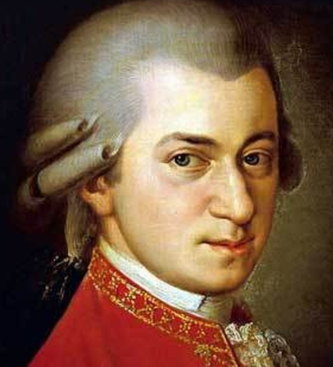

Австрийский композитор и музыкант-виртуоз. Один из самых популярных и влиятельных классических композиторов в истории музыки. Родился 27 января 1756 года в Зальцбурге, бывшем тогда столицей Зальцбургского архиепископства, в доме по адресу Гетрайдегассе, 9. Его отец Леопольд Моцарт был скрипачом и композитором в придворной капелле князя-архиепископа зальцбургского, графа Сигизмунда фон Штраттенбаха. Мать - Анна Мария Моцарт (урождённая Пертль), дочь комиссара-попечителя богадельни в Санкт-Гильгене. Из семерых детей от брака Моцартов выжили только двое: дочь Мария Анна, которую друзья и родственники звали Наннерль, и сын Вольфганг. Его рождение едва не стоило матери жизни. Лишь спустя некоторое время она смогла избавиться от слабости, внушавшей опасение за её жизнь. На второй день после рождения Вольфганг был крещён в Зальцбургском соборе Святого Руперта. Запись в книге крещений даёт его имя на латыни как Johannes Chrysostomus Wolfgangus Theophilus Mozart. Первые две составляющие полного имени - имя святого Иоанна Златоуста - в повседневной жизни не использовались. Четвёртая составляющая имени (Theophilus) имеет греческое происхождение и означает «возлюбленный Богом». Это имя Моцарта в течение его жизни переводилось на другие языки: немецкий, латинский, итальянский. Сам Моцарт предпочитал, чтобы его называли третьим именем: Вольфганг
Интересные факты из жизни:
Детали о произведениях:
Все эти три фрагмента являются частью знаменитого «Реквиема» — последнего и наиболее загадочного сочинения Моцарта. Заказ на создание произведения поступил от таинственного незнакомца в черном, а сам композитор, находясь в тяжелом состоянии, был убежден, что пишет заупокойную мессу для самого себя.